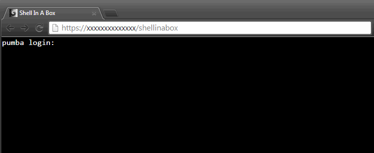

Shellinabox is a browser based, login shell, built using css, html and javascript and it runs entirely over HTTP. At a high level, shellinabox is very similar to an SSH shell session. They both utilize the /etc/passwd user database, they both make use of PAM, and they both execute /bin/login to authenticate users. The primary difference is that shellinabox communicates exclusivly over HTTP and HTTPS, not SSH.
Basically, shellinabox is a webserver that allows users to authenticate against a system and then renders the terminal output in html and css.
Install
It can be installed from source from shellinabox.com or if you're using Ubuntu 14.04, it's available from the Universe repo.
apt-get install shellinabox
It's recommended to implement additional layers of security by putting a reverse proxy in front of shellinabox, encrypting the connection and requiring HTTP authentication. We'll use apache for this.
apt-get install apache2 apache2-utils
Configure
We'll enable a couple modules we need
a2enmod ssl proxy proxy_http auth_digest
service apache2 restart
Next we'll configure the htpasswd file and create self signed SSL certificates
mkdir -p /etc/apache2/auth
htdigest -c /etc/apache2/auth/shell_users "Authorization Required" alex
mkdir -p /etc/apache2/ssl
openssl req -x509 -nodes -days 730 -newkey rsa:2048 -keyout /etc/apache2/ssl/shell.pem -out /etc/apache2/ssl/shell.pem
Now we'll install the apache vhost config and restart apache to make the changes take effect
<VirtualHost *:443>
ErrorLog ${APACHE_LOG_DIR}/shell-error.log
CustomLog ${APACHE_LOG_DIR}/shell-access.log combined
# Auth
<Location />
AuthType digest
AuthName "Authorization Required"
AuthDigestProvider file
AuthUserFile /etc/apache2/auth/shell_users
Require valid-user
Options -Indexes
</Location>
<Directory ~ "\.git">
Order allow,deny
Deny from all
</Directory>
# Reverse Proxy
ProxyPass /shellinabox http://localhost:4200/
ProxyPassReverse /shellinabox http://localhost:4200/
# SSL
SSLEngine on
SSLCertificateFile /etc/apache2/ssl/shell.pem
SSLCertificateKeyFile /etc/apache2/ssl/shell.key
SSLHonorCipherOrder on
SSLProtocol all -SSLv2 -SSLv3
SSLCipherSuite ECDHE-RSA-AES128-GCM-SHA256:ECDHE-ECDSA-AES128-GCM-SHA256:ECDHE-RSA-AES256-GCM-SHA384:ECDHE-ECDSA-AES256-GCM-SHA384:DHE-RSA-AES128-GCM-SHA256:DHE-DSS-AES128-GCM-SHA256:kEDH+AESGCM:ECDHE-RSA-AES128-SHA256:ECDHE-ECDSA-AES128-SHA256:ECDHE-RSA-AES128-SHA:ECDHE-ECDSA-AES128-SHA:ECDHE-RSA-AES256-SHA384:ECDHE-ECDSA-AES256-SHA384:ECDHE-RSA-AES256-SHA:ECDHE-ECDSA-AES256-SHA:DHE-RSA-AES128-SHA256:DHE-RSA-AES128-SHA:DHE-DSS-AES128-SHA256:DHE-RSA-AES256-SHA256:DHE-DSS-AES256-SHA:DHE-RSA-AES256-SHA:AES128-GCM-SHA256:AES256-GCM-SHA384:AES128-SHA256:AES256-SHA256:AES128-SHA:AES256-SHA:AES:CAMELLIA:DES-CBC3-SHA:!aNULL:!eNULL:!EXPORT:!DES:!RC4:!MD5:!PSK:!aECDH:!EDH-DSS-DES-CBC3-SHA:!EDH-RSA-DES-CBC3-SHA:!KRB5-DES-CBC3-SHA
</VirtualHost>
service apache2 restart
By default, shellinabox uses HTTPS. Because we're putting it behind a proxy and using our own webserver to implement TLS, we'll disable it's built-in encryption as well as force it to listen on the local loopback interface.
vi /etc/default/shellinabox
# Modify
SHELLINABOX_ARGS="--no-beep --disable-ssl --localhost-only"
service shellinabox restart
If everything is working correctly, you should now be able to browse to https://[server_ip]/shellinabox and be greeted with a familar looking prompt, wating for a username and password.
